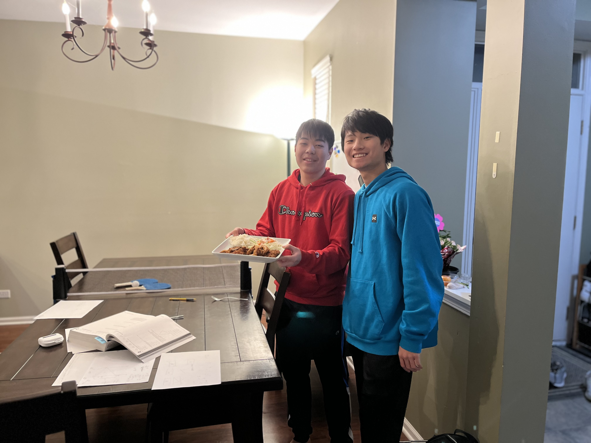
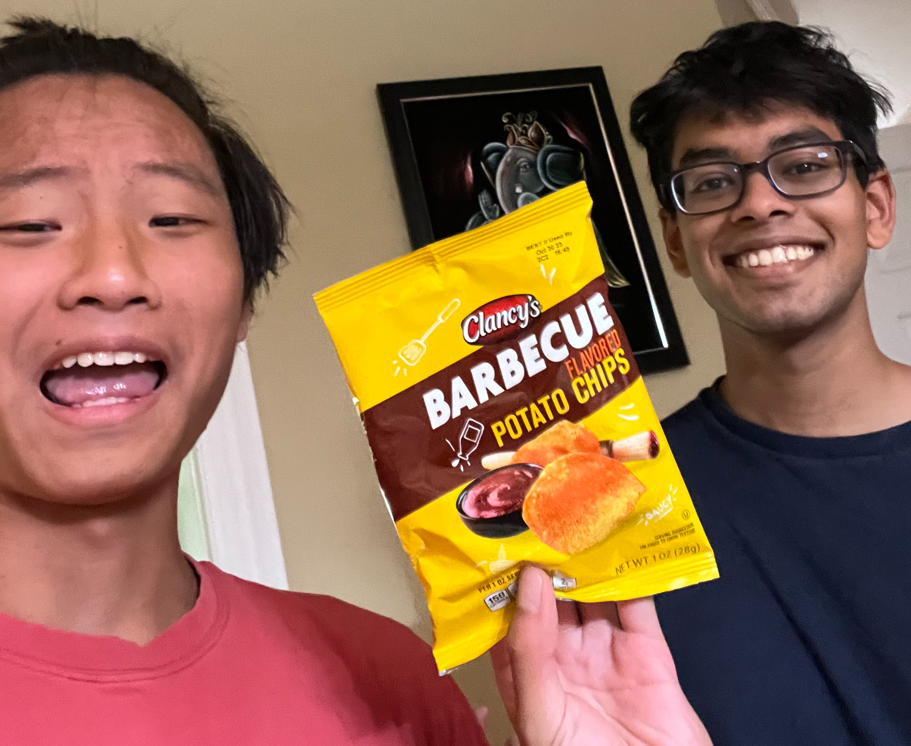
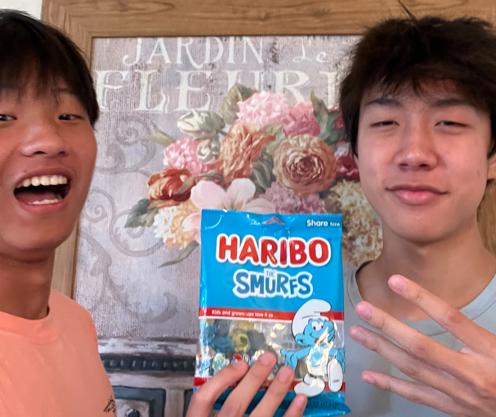

On February 10, we booked our first Food For thought session!
We worked on ACT preparation and learned about rate formulas and trigonometry.
The highlighted food was tonkatsu with a side of rice and salad

Arnav and I worked on the reading and writing portion of the SAT. I showcased some cool studying strategies and we took a break by playing ping pong.
The featured food was barbecue chips from Aldi—a grocery store with great food at a lower cost!

Juno prepared for the AMC test with some Art of Problem Solving books. We took a deep dive into logarithms and exponents.
The showcased food was a special flavor of Haribo gummies. Found at Woodman's!

What better way to spend your birthday than a little tutoring session?
On this day, Rino and I focused specifically on math. We took some guided practice tests and enjoyed a special dinner after.
My favorite dish was definitely the homemade fish patties that were perfectly balanced in taste.
>
<